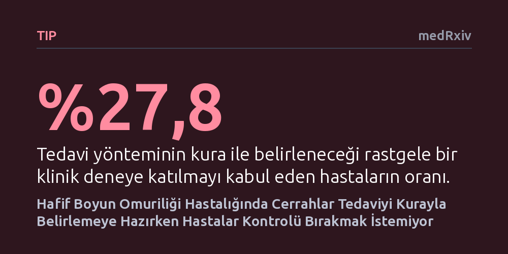

TIP · medRxiv · 2026-10-19
Araştırmacılar, hafif boyun omuriliği sıkışmasında ameliyat ile takibi kıyaslayacak rastgele bir klinik deneye hasta ve cerrahların katılma isteğini inceledi. Cerrahların yüzde 85'i hastaları rastgele dağıtmaya razıyken, hastaların yalnızca yüzde 28'i tedavi kontrolünü devretmek istemedikleri için bunu kabul etti.
Hangi tedavinin daha iyi olduğunu kanıtlamak için altın standart sayılan rastgele klinik deneylerin, hastaların ameliyat kararını şansa bırakmak istememesi nedeniyle her zaman uygulanamayacağını gösteriyor.

Boyun omuriliğinin yaşlanmaya veya kireçlenmeye bağlı olarak baskı altında kalması, yetişkinlerde travma dışı omurilik hasarının en yaygın sebebidir. Hastalık hafif seyrettiğinde tıbbın önünde zorlu bir ikilem belirir: Hemen ameliyat yapıp sinirleri rahatlatmak mı gerekir, yoksa hastayı yakın takibe alıp fizik tedaviyle izlemek mi? Mevcut klinik kılavuzlar iki yaklaşım arasında kesin bir üstünlük ilan edememekte, kararı hekim ile hastanın ortak değerlendirmesine bırakmaktadır.
Tıpta bir tedavinin diğerinden üstün olup olmadığını anlamanın en güvenilir yolu rastgele kontrollü klinik deneylerdir. Bu deneylerde hastaların bir kısmına kura ile erken ameliyat, diğer kısmına ise yine kura ile sadece takip tedavisi atanır ve sonuçlar kıyaslanır. Ancak şimdiye kadar hafif boyun omuriliği hastalarında bu iki yaklaşımı doğrudan karşılaştıran böyle bir çalışma yapılamamıştır. Ortadaki temel açmaz şudur: Hem cerrahlar hem de boyun omuriliğinde hasar başlayan hastalar, bu hayati kararı yazı tura atar gibi bir kuraya bırakmaya gerçekten razı mıdır?
Araştırmacılar bu sorunun yanıtını bulmak amacıyla Aralık 2025 ile Temmuz 2026 tarihleri arasında iki ayrı anket çalışması yürüttü. İlk grupta, uzman hekimlerce boyun omuriliği sıkışması tanısı kesinleştirilmiş ve üniversite kliniklerinde takip edilen 54 hasta yer aldı. İkinci grupta ise omurga cerrahisinde uzmanlaşmış 52 beyin cerrahı ve ortopedist ankete katıldı.
Her iki gruba iki farklı araştırma senaryosu sunuldu. İlk senaryoda, hastaların erken cerrahi veya takip gruplarına kura yöntemiyle rastgele atandığı klasik bir klinik deneye katılma istekleri soruldu. İkinci senaryoda ise kura olmaksızın, hastanın kendi seçtiği tedaviyi aldığı ve sadece sonuçların uzun süre izlendiği ileriye dönük gözlemsel bir araştırmaya dahil olma niyetleri ölçüldü. Yanıtlar istatistiksel yöntemlerle karşılaştırılarak tarafların eğilimleri belirlendi.
Anket sonuçları cerrahlar ile hastalar arasında belirgin bir uçurum olduğunu ortaya koydu. Cerrahların yüzde 84,6'sı (52 hekimin 44'ü) hastalarını kura ile ameliyata veya takibe yönlendirecek bir klinik deneye katılmaya istekliydi. Cerrahların yüzde 86,5'i her iki seçeneğin de tıbben makul olduğunu ve kişisel tercihlerinin neredeyse yarı yarıya bölündüğünü belirtti. Buna karşılık hastaların yalnızca yüzde 27,8'i (54 hastanın 15'i) tedavisinin kura ile belirlenmesini kabul etti.
Hastaların kura yöntemini reddetme gerekçesi araştırmanın en çarpıcı sonucuydu. Reddedenlerin yüzde 85,2'si ameliyat korkusundan değil, kendi bedenleri ve tedavileri üzerindeki karar hakkını korumak istedikleri için kurayı kabul etmediğini söyledi; ameliyat korkusunu gerekçe gösteren yalnızca tek bir hasta oldu. Nitekim tedaviyi kendilerinin seçebileceği gözlemsel çalışma modeli sorulduğunda, hastaların yüzde 72,2'si bu araştırmaya memnuniyetle katılabileceğini bildirdi. Dahası, kurayı reddeden 39 hastanın 26'sı tercih hakkı korunduğunda bir bilimsel araştırmada yer almaya istekli olduğunu belirtti.
Bu bulgular, tıp araştırmalarında sıkça yapılan kritik bir planlama yanılgısına ışık tutuyor. Bir klinik deneyin yapılabilirliği sadece konunun uzmanı hekimlere sorulduğunda, araştırma kağıt üzerinde çok kolay ve uygulanabilir görünebilir. Ancak hastalar işin içine girdiğinde, kimse boyun omuriliği gibi kritik bir organın ameliyat edilip edilmeyeceğini bir algoritmanın ya da şansın eline bırakmak istemiyor. Hastalığın hafif veya orta şiddette olması da hastaların bu tutumunu değiştirmiyor.
Araştırmacılar, hafif boyun omuriliği sıkışmasında iki tedaviyi kıyaslamanın en gerçekçi yolunun kuralı deneyler değil, hastaların kendi tercihleriyle ilerlediği geniş çaplı gözlemsel çalışmalar olduğunu vurguluyor. Makalenin uyarısı oldukça açık: Sadece hekimlerin görüşüne dayanarak kurgulanan fizibilite çalışmaları, bir klinik deneye katılabilecek hasta sayısını ciddi biçimde abartabilir.